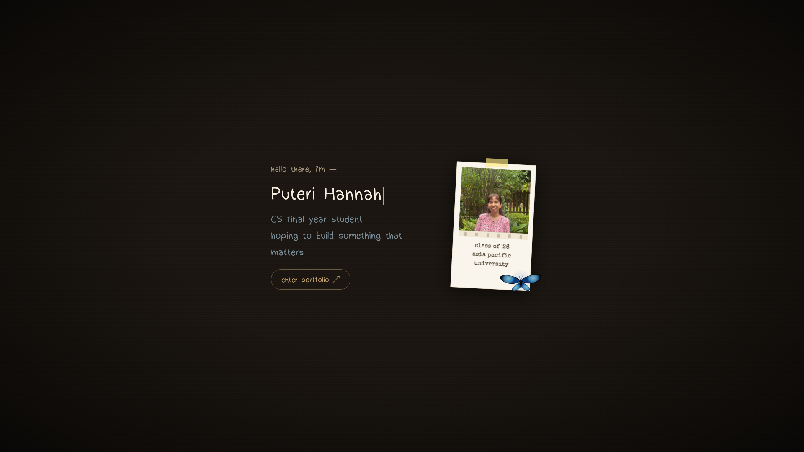
hannahdaud.github.io
How AI is changing the workplace — and how to be the applicant it can't ignore.
Fathy Rashad — Co-founder/CTO, Cleve.ai
Here's what actually gets you hired in 2026.
Malaysian graduates end up underemployed —
“gaji cukup makan.” The degree alone isn't enough.
applications land on one corporate job opening.
of job seekers already do. It's not cheating — it's the baseline.
Volume: apply wide — most rejections were never about you.
Visibility: when a human looks, be impossible to ignore.
Tonight: mostly the packaging game — plus faster skill-building with AI.
Your packaging — resume, outreach, voice.
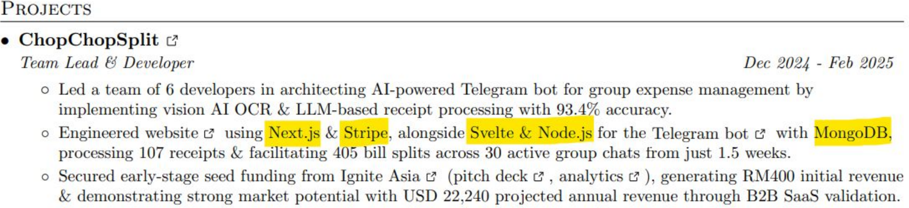
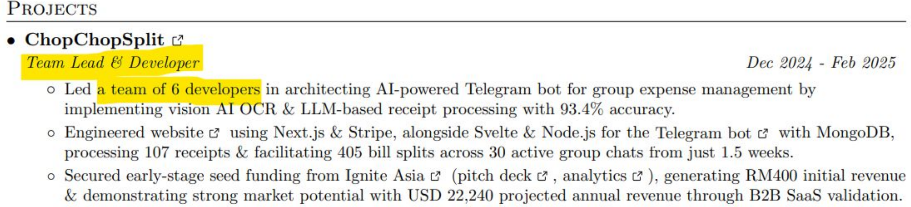
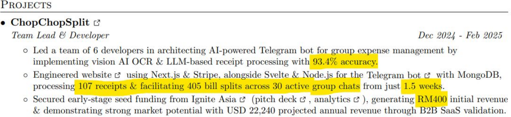
Mine them from work you already did.
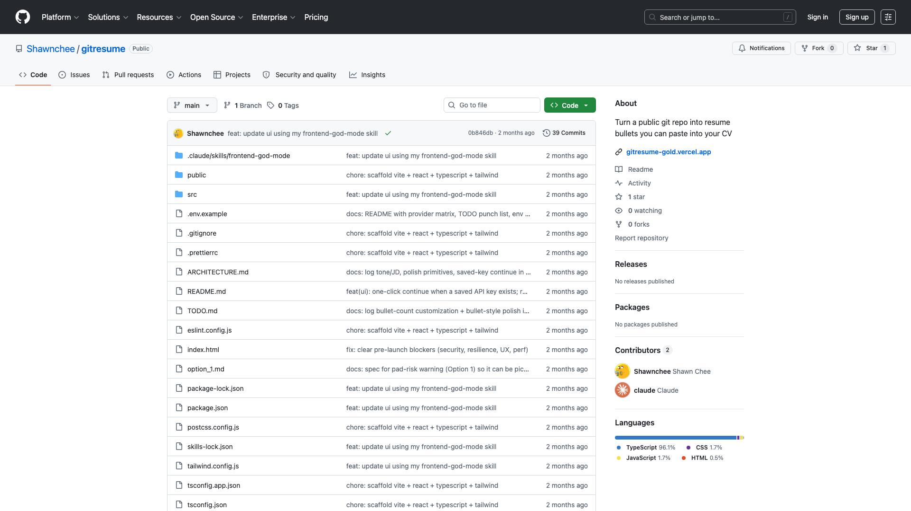
Shawn Chee · github.com/Shawnchee/gitresume
(the tool itself is his best resume bullet 😉 — always verify AI claims before pasting)
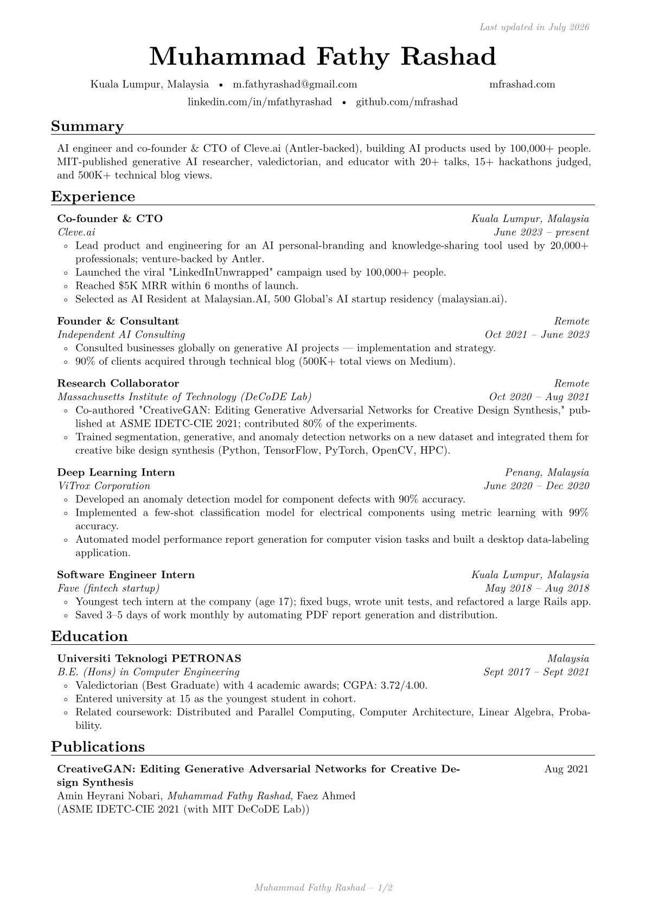
Rule #1: AI never invents — every claim traceable. “The taste and the truth stayed mine.”
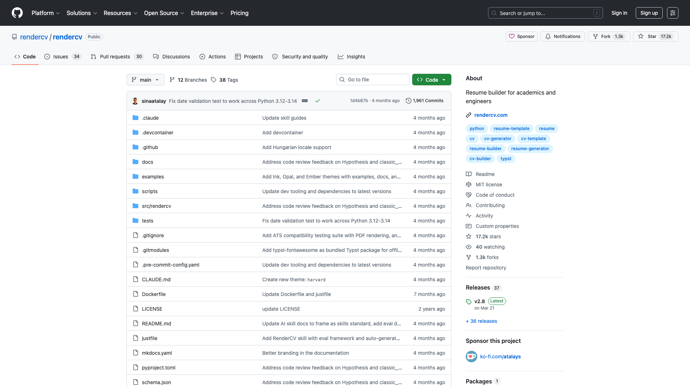
Every claim traceable to something real.
“The taste and the truth stayed mine.”
Personalization takes energy — you can't fake it at scale.
Spend yours on the few companies you'd fight to join.
Resume in, application out.
Volume just got cheap.
AI drafts. You proofread. Rewrite it in your voice — every time.
Short. Personal. A little risky.
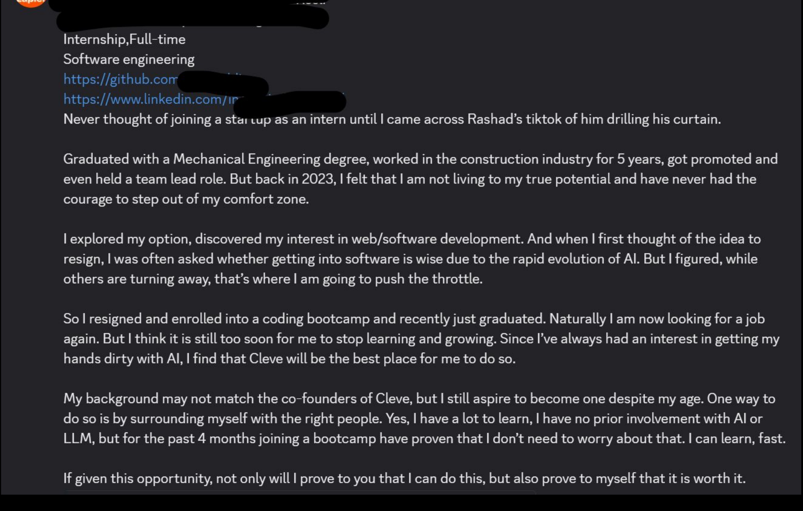
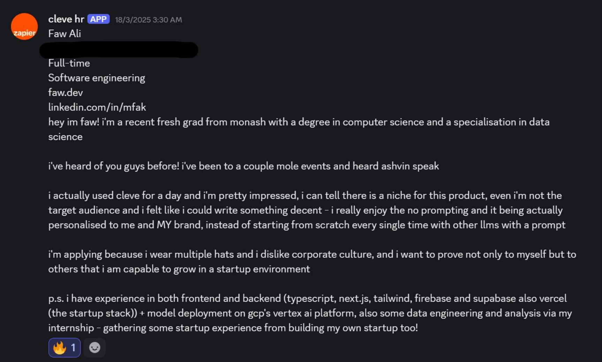
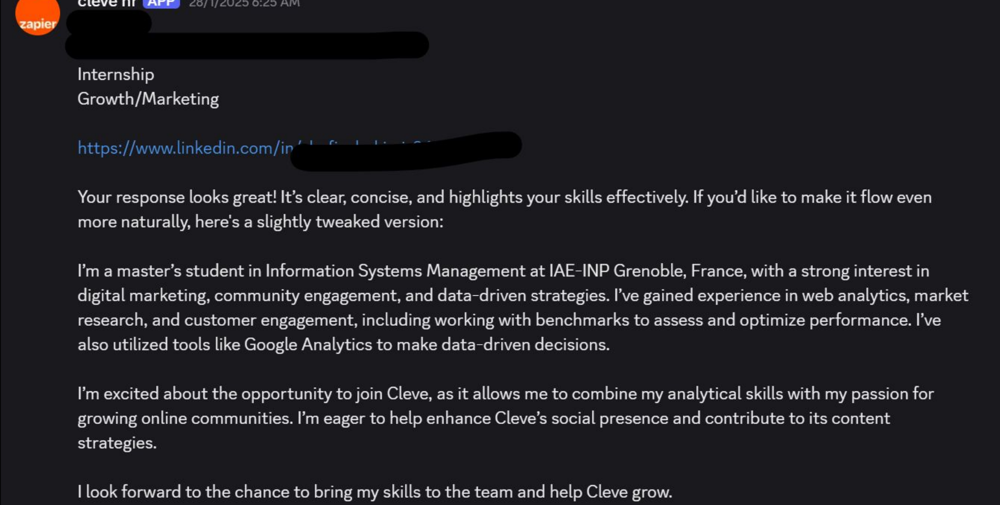
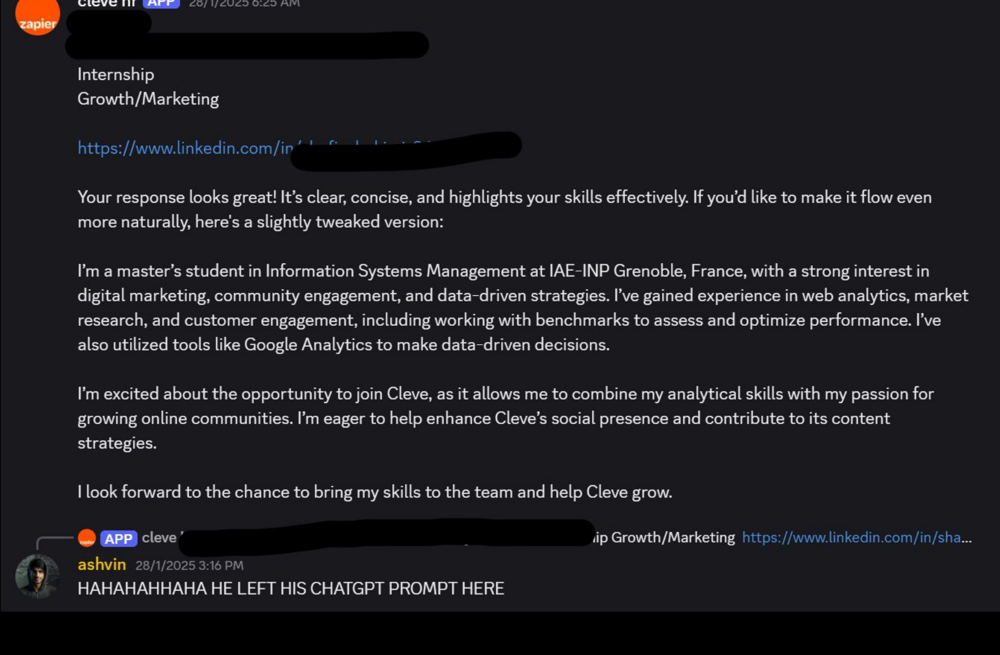
Draft with AI. Rewrite it like you're texting a friend.
Used the product for a day → sent real feedback →
found an exploit in our system → shared it in his application.
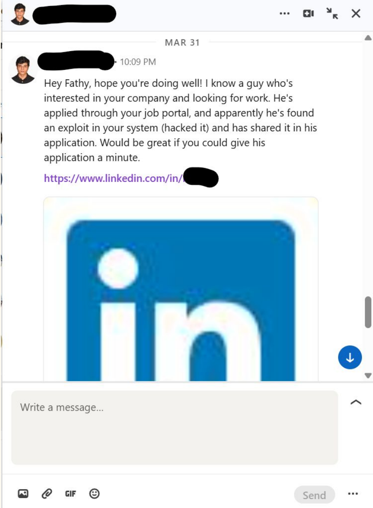
Founders are busy. Outreach is how you get seen twice.
Can you actually build things?
What used to be mid-level engineer work is now the student project bar.
for the working core. ~2 weeks polished. That's the new normal.
Companies now expect AI fluency like we expect Git.
Being fluent stands out — because most aren't.
AI fluency is rising everywhere — but targeting MNCs? Still grind the fundamentals.
AI to learn faster — not to skip learning.
Months of structured skill-building, verified by an exam.
Recruiters notice it. Keep it front and center.
Everyone in your cohort holds the same one.
What you build on top is what separates you.
Cert proves you learned it. Projects prove you can do it.
The best applicants are googleable.
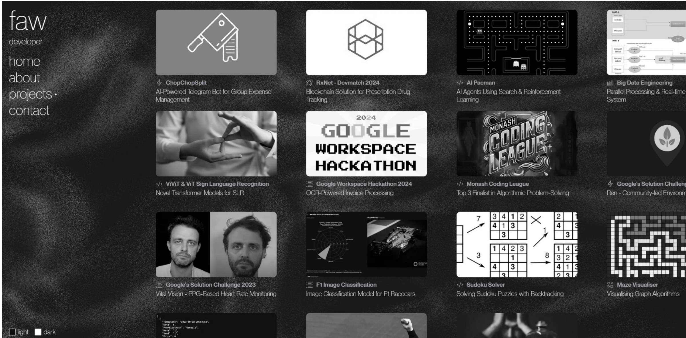
No coding needed — describe it in plain English, react, iterate. Free hosting included.
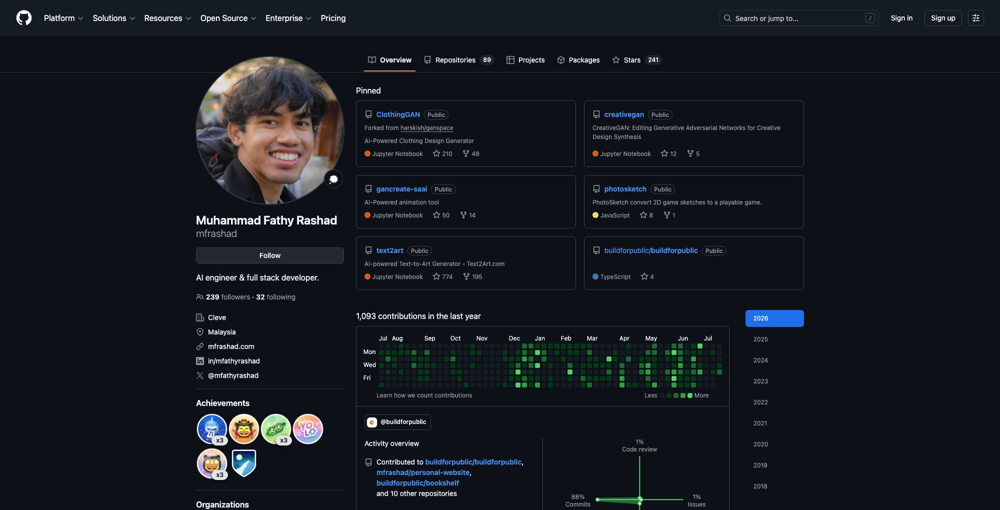
Headline, about, project sections — AI drafts, you edit.
Recruiters check it before they ever reply.
Have you applied your skills in real contexts?
ChopChopSplit: 6 students, 1.5 weeks, real users, seed funding.
“No opportunity” is no longer the excuse — build your own experience.
Not a disloyalty lecture — negotiate with data, move when growth stalls.
A 26-year spread on the same milestone — from one career decision.
Each lane changes which interview you prep for — remember the MNC vs startup split.
YouTube: “Tech Career in Malaysia” · Developer Kaki — link on the resource page
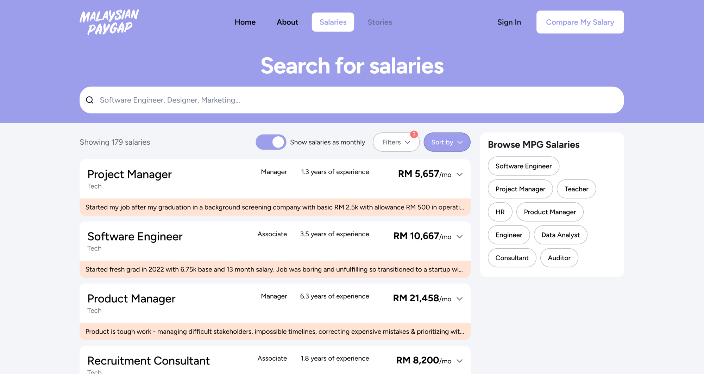
Do you have the motivation to excel?
A professor found my AI tutorials online — at 19, no connections, no application.
Learning in public compounds.
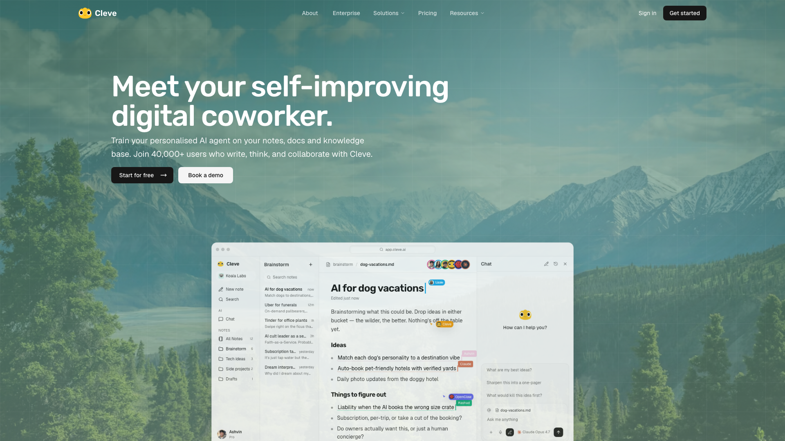
Use AI to build more — not to fake more.
Your cert opened the door — your proof decides the offer.
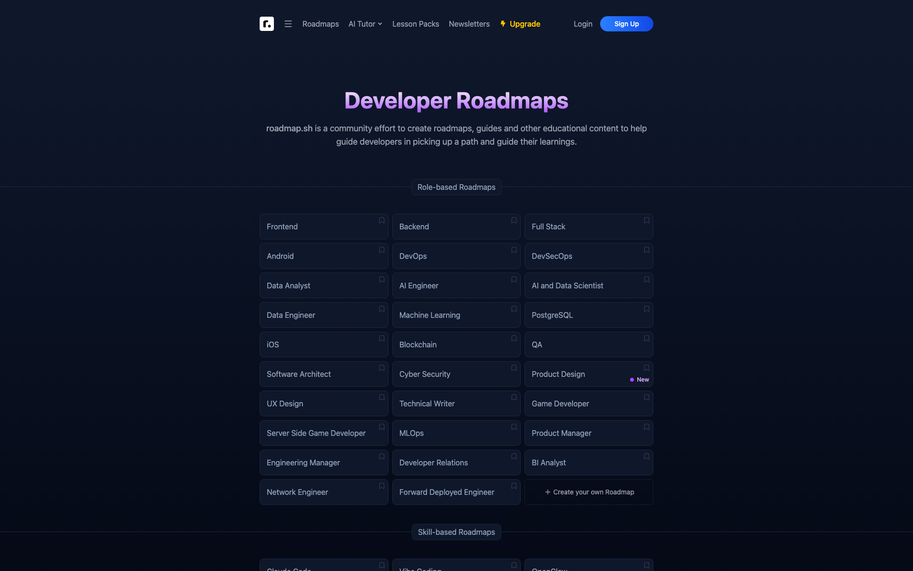
All linked on the resource page — QR on the next slide.
All tools & links from this talk — published as a Cleve note (yes, the blog thing from earlier 😉)
mfrashad.com · in/mfathyrashad · IG @rashadventure
DM me. I actually read them — Faw is proof. 😄
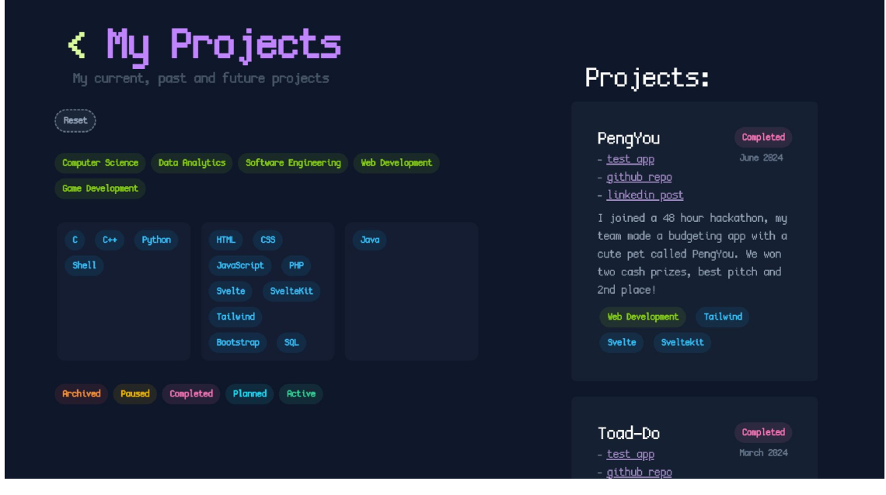
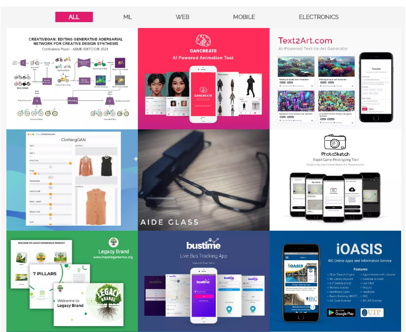